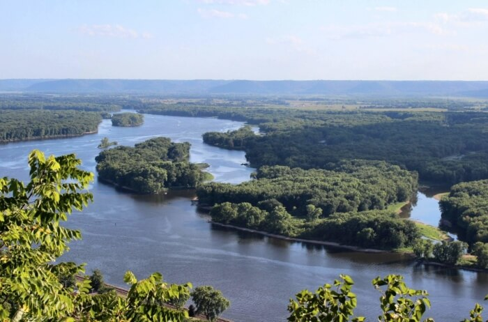
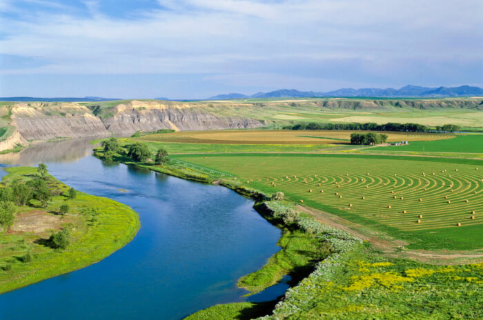
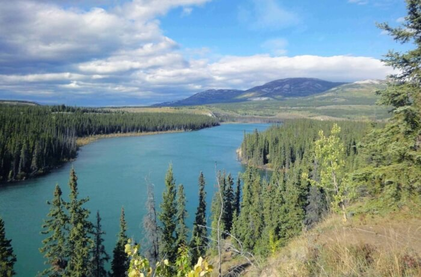
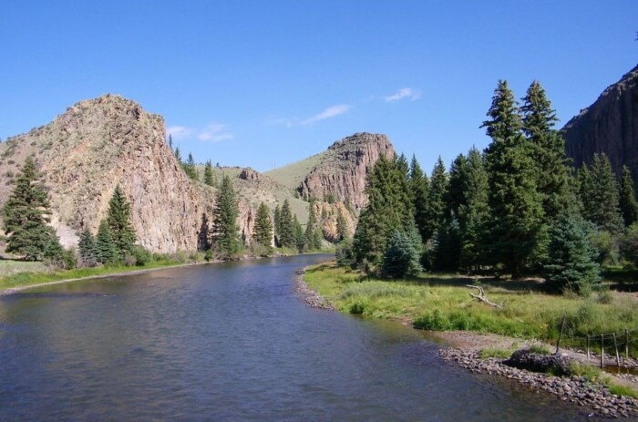
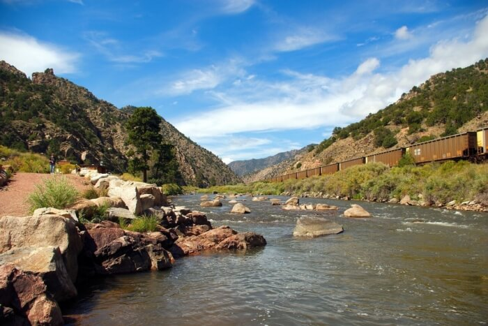
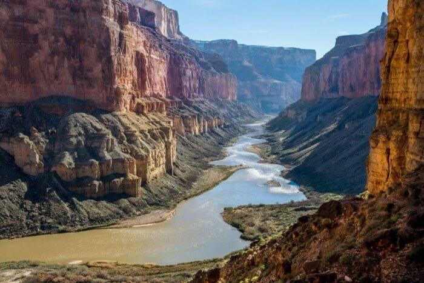
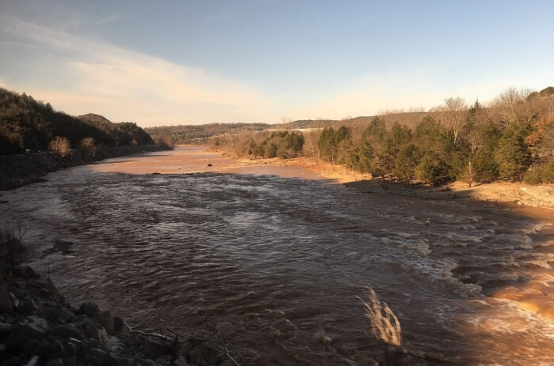
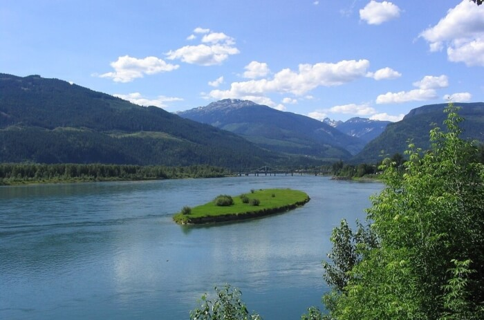
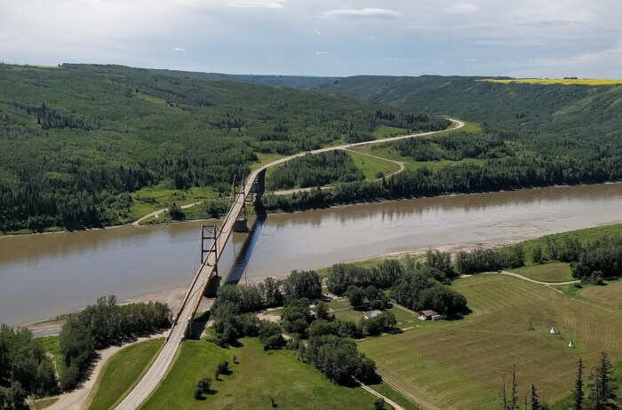
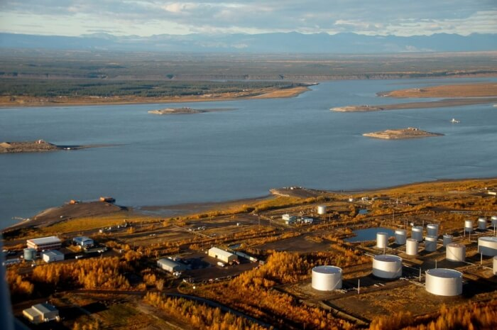

В Северной Америке большое количество рек как крупных, так и мелких. Все они различаются по виду питания. Но так как в этой части континента осадков выпадает много, то преимущественно здесь дождевое и снеговое питание рек. Также они делятся на три группы по принадлежности к бассейнам океанов: Атлантического, Тихого и Северного Ледовитого. Самой большой из этих рек является Миссисипи, которая протекает только на территории США. Также она занимает третье место в мире по протяженности.
Многие из этих рек имеют водохранилища, в которых находятся огромные запасы пресной воды. Также часть из них являются судоходными, а, значит, играют важную роль в тех штатах, регионах, где они протекают. На них построено большое количество ГЭС, и они питают электричеством многие города. Немалую роль реки играют и в сельском хозяйстве (рассказывает must-see.top).
Основная артерия в Северной Америке. Протекает на территории США в десяти штатах. А исток расположен в штате Миннесота. А заканчивается большой дельтой в Мексиканском заливе. Разделяют на Верхнюю и Нижнюю части. Граница разделения находится в штате Иллинойс. Самый крупный приток этой реки – Миссури. А долина Миссисипи является плодородным регионом, так как имеется большой слой иловых отложений.
Длина реки – 3770 км.

Является притоком Миссисипи. Начало ее находится в Скалистых горах, в штате Монтана на границе с Канадой. Протекает на территории десяти штатов США, двух провинций Канады. Самыми крупными притоками являются: Платт, Канзас, Осейдж, Йеллоустон. Судоходство, которое бурно развивалось здесь в XIX-XX веках, сейчас находится в упадке. Занимает девятое место в США по расходу воды.
Длина реки – 3767 км.

Название переводится, как «Большая река». Свое начало берет из озера Атлин. Это Канада, Британская Колумбия. Только у истоков река имеет горный характер, в дальнейшем она становится полностью равнинной. Главными притоками являются: Клондайк, Фортимайл, Стьюард, Сикстимайл, Шандалар, Коюкук. Протекает через штат Аляска в США, северо-запад Канады. Впадает в Берингово море.
Длина реки – 3187 км.

По этой реке проходит граница между США и Мексикой. Занимает в США четвертое место по протяженности. Берет начало в американском штате Колорадо в горах Сан-Хуан. До 2003 года река впадала в Мексиканский залив. Сейчас не доходит до залива 150 метров. Не судоходна, а с 1950 года река постепенно милеет. Сейчас основной причиной ее высыхания являются климатические изменения.
Длина реки – 3034 км.

Занимает шестое место в США по протяженности. Берет начало в Скалистых горах. Затем протекает на территории четырех штатов США. Река пересекает Великие и Центральные равнины. Она судоходна и играет большую роль в экономике страны. Ведь она образует крупные водохранилища. Однако в результате забора воды для водохранилищ река заметно обмелела. Имеет несколько притоков: Пауни, Уолнат, Фаунтин-Крик, Симаррон, Пото.
Длина реки – 2364 км.

Занимает по водосбору седьмое место в Северной Америке. Начало берет в штате Колорадо в Скалистых горах. Протекает через Гранд-Каньон. Впадает река в Калифорнийский залив Тихого океана. Однако в последние двадцать лет это случалось только несколько раз и после больших паводков. Протекает через три штата США и два штата Мексики. Самыми крупными ее притоками являются Грин-Ривер и Хила.
Длина реки – 2334 км.

Это приток Миссисипи. Название переводится, как «Красная река», благодаря почве с большим содержанием глины на берегу реки. Берет начало в Техасе при слиянии двух рек. Протекает через четыре штата: Техас, Луизиана, Оклахома, Арканзас. И пересекает Примексиканскую низменность. В низовьях делится на два рукава: Олд-Ривер и Атчафалая. Второй рукав впадает в Мексиканский залив. Питание преимущественно дождевое, поэтому нерегулярное.
Длина реки – 2190 км.

Занимает четвертое место среди рек в США по протяженности. Протекает через такие штаты США: Вашингтон, Орегон и провинцию Канады Британская Колумбия. Река впадает в Тихий океан. На ней построено 14 ГЭС и она является крупнейшей по производству гидроэнергии. На ней построена самая большая бетонная плотина в мире. Здесь же расположено большое водохранилище – озеро Рузвельта.
Длина реки – 2000 км.

Протекает через канадские провинции: Британская Колумбия, Альберта. Является частью речной системы Маккензи. Свое начало река берет в Скалистых горах в озере Уиллистон. В долине реки развито сельское хозяйство, добыча леса. Здесь построена плотина Беннета, котораяобеспечивает гидроэнергией, помогает предотвратить наводнения. Самым крупным притоком является Финли.
Длина реки – 1923 км.

Одна из самых больших рек Канады. Названа в честь Александра Маккензи. Является судоходной на всем протяжении. Свое начало берет из Большого Невольничьего озера в Канаде. Впадает в Северный Ледовитый океан. Бассейн реки расположен сразу в нескольких климатических поясах – от умеренного и до арктического. Имеет несколько притоков – Уиллоулейк, Блэкуотер, Траут, Рут, Ригли, Джонсон, Редстон.
Длина реки – 1738 км.

ВВЕРХ